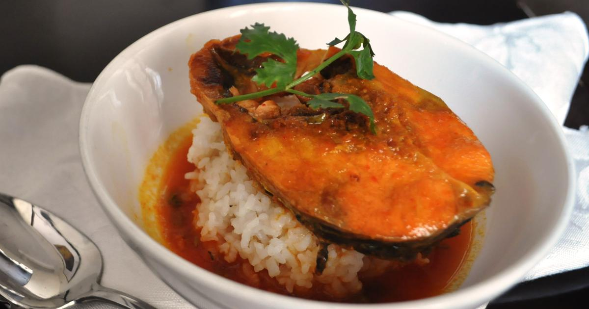
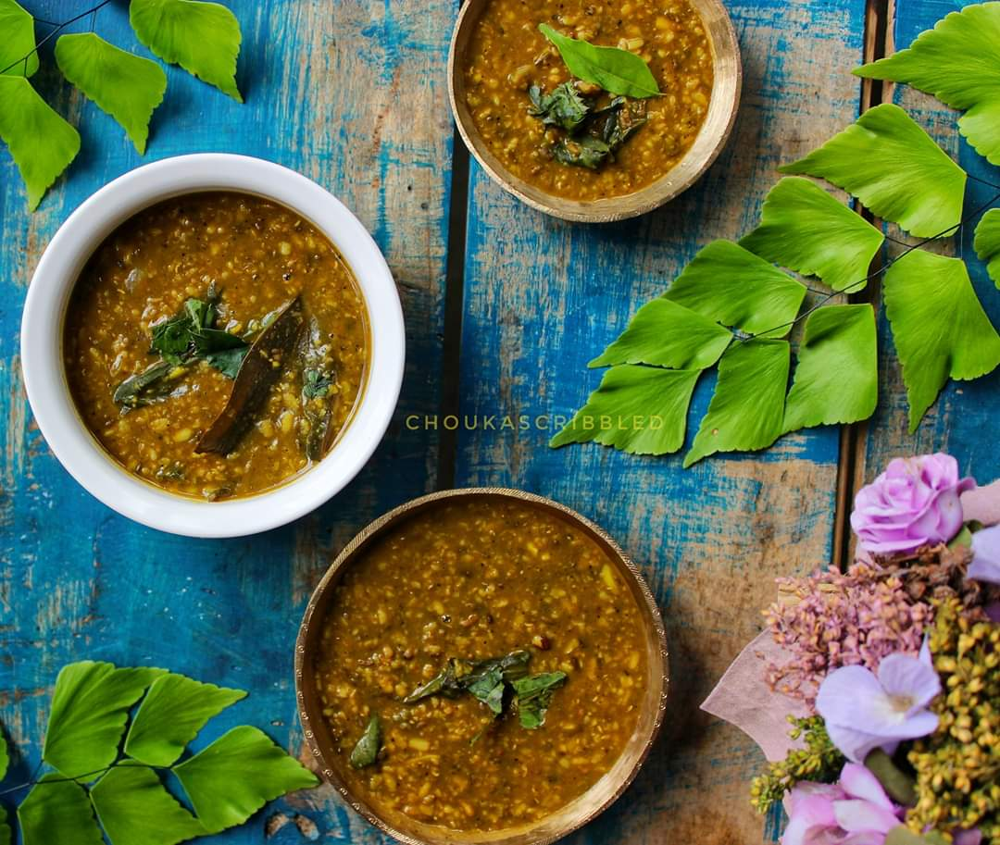
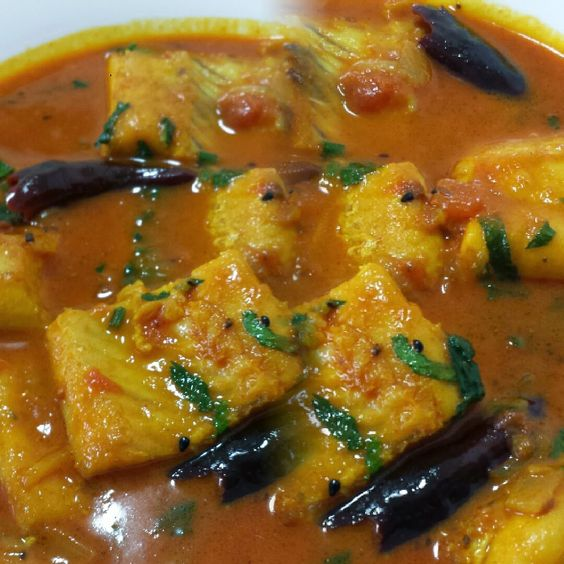

Famous Foods of Assam
Assamese Fish Tenga

Assamese Fish Tenga Recipe (English):
- Ingredients:
- 500g freshwater fish (like Rohu or Catla)
- 2 tomatoes, chopped
- 1 potato, cut into cubes
- 1 teaspoon mustard seeds
- 2 green chilies, slit
- 1 tablespoon lemon juice
- 1 teaspoon turmeric powder
- 2 tablespoons mustard oil
- Salt to taste
- Water as needed
- Instructions:
- Marinate the fish pieces with turmeric and salt for 10 minutes.
- Heat mustard oil in a pan and fry the fish pieces until golden brown. Set aside.
- In the same pan, add mustard seeds and let them splutter. Add chopped tomatoes and cook until soft.
- Add potato cubes, turmeric powder, and salt. Sauté for a few minutes.
- Add water and bring it to a boil. Let it simmer until potatoes are cooked.
- Add fried fish pieces and lemon juice. Simmer for another 5 minutes.
- Serve hot with steamed rice.
Khar

Khar Recipe (English):
- Ingredients:
- 1 raw papaya, peeled and chopped
- 1 tablespoon alkali (made from dried banana peel)
- 1 teaspoon mustard oil
- 2 green chilies, slit
- 1 teaspoon turmeric powder
- Salt to taste
- Water as needed
- Instructions:
- Heat mustard oil in a pot and add green chilies and turmeric powder. Sauté for a minute.
- Add chopped papaya and stir well. Cook for 5 minutes.
- Add water and alkali. Bring to a boil, then simmer until the papaya is tender.
- Adjust salt and cook for another few minutes until the flavors meld together.
- Serve hot with steamed rice.
Masor Tenga

Masor Tenga Recipe (English):
- Ingredients:
- 500g fish (like Rohu or Catla)
- 2 tomatoes, chopped
- 1 teaspoon mustard seeds
- 2 green chilies, slit
- 1 tablespoon lemon juice
- 1 teaspoon turmeric powder
- 2 tablespoons mustard oil
- Salt to taste
- Water as needed
- Instructions:
- Marinate the fish pieces with turmeric and salt for 10 minutes.
- Heat mustard oil in a pan and fry the fish pieces until golden brown. Set aside.
- In the same pan, add mustard seeds and let them splutter. Add chopped tomatoes and cook until soft.
- Add turmeric powder, green chilies, and salt. Sauté for a few minutes.
- Add water and bring it to a boil. Let it simmer for a few minutes.
- Add fried fish pieces and lemon juice. Simmer for another 5 minutes.
- Serve hot with steamed rice.